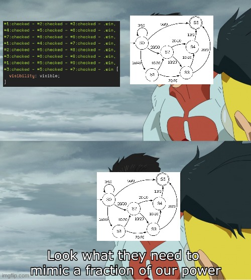

As a software developer, I’m always looking for new and fun ways to challenge myself. Some time ago, I decided to implement tic-tac-toe with AI using only HTML and CSS. That is, no JavaScript! I already knew about the possibility of advanced CSS interactions (e.g. fancy checkboxes), but I wanted to see how far I could take it.
Here’s a CodePen of it! Can you beat a style sheet in a game of tic-tac-toe?
See the Pen Pure CSS Tic Tac Toe AI by Kalabasa (@kalabasa) on CodePen.
In this post, I’ll write about the steps I took to make it, starting with the fundamentals.
Building blocks
Before starting to build anything complex, it’s important to start small and think about the basic elements. Unlike JavaScript, HTML and CSS are declarative languages. We can’t have procedures or functions, control flow, if-statements, and the like. Instead what we have are markup and rules. We’ll build upon these rules to create complex game logic.
For starters, let’s do something that’s fairly common on the web: custom checkbox styles.
To do this, we need an extra element for the checkbox visuals, like an empty span element.
<label>
<input type="checkbox" /> <span></span> Check this out
</label>On the CSS side, the real checkbox input is hidden, while the span is styled as a checkbox in its stead.
Now here’s the important part, we’ll use the :checked pseudo-class and the sibling combinator ~ to make it all work. The checked pseudo-class selector reacts to the checkbox input’s state, while the sibling combinator makes it possible to apply the styles on the separate fake checkbox element.
input:checked ~ span {
background-color: red;
transform: rotate(45deg);
}Custom checkboxes! Easy.
Action at a distance
The sibling combinator has uses beyond styling boxes next to inputs. We can perform some “action at a distance”. For example, if you can tick the following “Is it raining” checkbox, the distant “Advice” box reacts:
As you know, when it rains, water falls down from the sky. This may cause undesired wetness. An umbrella is a device which shields the user from falling particles such as the aforementioned rainwater.
input:checked ~ .advice .take-umbrella {
visibility: visible;
}
input:checked ~ .advice .no-umbrella {
visibility: hidden;
}As you’ll see later, the sibling combinator ~ can be very useful for these types of interactions.
The next level
Let’s make this system a lot more flexible.
Using the <label>’s for attribute, we can get even more action at a distance. We can make just about any kind of UI we want!
To demonstrate, I present… the weather-advice-o-matic! 🌈 Go ahead, press the button!
The way this generalises is that all the <input>s are placed at the very top of the document. These inputs represent the global state. We can use <label for=… to control those inputs from anywhere, and sibling selectors to react to those inputs anywhere.
OR
A single button is not very exciting, is it? Let’s add another input and implement an OR construct to determine the output. That is, implement "if A or B then C".
In CSS this can be easily achieved by using a selector list (comma-separated selectors).
input#raining:checked ~ .advice .take-umbrella,
input#sunny:checked ~ .advice .take-umbrella {
visibility: visible;
}Now, weather-advice-o-matic can make decisions based on two parameters!
(If RAINY or SUNNY then UMBRELLA)
AND
How about AND? We can implement an AND construct too. This involves chaining the inputs together in a single selector using sibling combinators.
input#raining:checked ~ input#windy:checked ~ .advise .take-raincoat {
visibility: visible;
}What’s this? Weather-advice-o-matic can now make nuanced decisions! Wow! Careful, it might be sentient!!!
(If RAINY and WINDY then RAINCOAT)
Here’s a summary of what we have so far:
/* if A or B then C */
A ~ C,
B ~ C {
C
}
/* if A and B then C */
A ~ B ~ C {
C
}Another basic computing operator aside from AND and OR is the NOT operator. We don’t really need that here, but for the record, there’s the :not() pseudo-class in CSS. You can figure that out.
Prototype: Three-in-a-row
As a proof of concept and precursor to tic-tac-toe, let’s look at this three-in-a-row game.
This is a 3x3 array of checkbox inputs. Internally, each box is numbered 1 to 9 starting from the top-left box going left-to-right row-wise.
Here are the rules for implementing the win condition in CSS:
#1:checked ~ #2:checked ~ #3:checked ~ .win,
#4:checked ~ #5:checked ~ #6:checked ~ .win,
#7:checked ~ #8:checked ~ #9:checked ~ .win,
#1:checked ~ #4:checked ~ #7:checked ~ .win,
#2:checked ~ #5:checked ~ #8:checked ~ .win,
#3:checked ~ #6:checked ~ #9:checked ~ .win,
#1:checked ~ #5:checked ~ #9:checked ~ .win,
#3:checked ~ #5:checked ~ #7:checked ~ .win {
visibility: visible;
}Yes, it’s kinda hacky, but that is expected when you force logic into CSS. For comparison, the CSS for tic-tac-toe goes over 9000 lines! I never said it would be clean.
Anyway, these 8 lines correspond to the 8 possible ways to win the game. The 3-input AND rule (remember AND rules?) in each line covers every possible winning combination. The pseudocode in the comment helps illustrate this:
/*
* if
* ([#1 marked] and [#2 marked] and [#3 marked]) // top row
* or ([#4 marked] and [#5 marked] and [#6 marked]) // middle row
* or ([#7 marked] and [#8 marked] and [#9 marked]) // bottom row
* .
* :
* or ([#3 marked] and [#5 marked] and [#7 marked]) // upward diagonal
* then
* [win]
*/
#1:checked ~ #2:checked ~ #3:checked ~ .win,
#4:checked ~ #5:checked ~ #6:checked ~ .win,
#7:checked ~ #8:checked ~ #9:checked ~ .win,
#1:checked ~ #4:checked ~ #7:checked ~ .win,
#2:checked ~ #5:checked ~ #8:checked ~ .win,
#3:checked ~ #6:checked ~ #9:checked ~ .win,
#1:checked ~ #5:checked ~ #9:checked ~ .win,
#3:checked ~ #5:checked ~ #7:checked ~ .win {
visibility: visible;
}Taking turns
So far, the order of your inputs doesn’t matter. You can even undo your inputs by unchecking the boxes (Try it above). That won’t fly in a game of tic-tac-toe, where we take turns incrementally marking the board. No backsies!
We need a way to “consume” inputs. We can do this by hiding the inputs or otherwise making them unclickable. This is just a trick, of course, as we can’t really disable inputs using CSS. But it works fine for the typical mouse and touch users.
So for tic-tac-toe, what I did was define multiple sets of the 3x3 input board, that is, one set of inputs for each turn.
Stacked on top of each other, each set is only interactable on its turn.
/* Disable turn 1 inputs when turn 1 is played */
input[name="turn_1"]:checked ~ input[name="turn_1"] {
pointer-events: none;
}
/* Enable next turn's inputs */
input[name="turn_1"]:checked ~ input[name="turn_2"] {
pointer-events: all;
}
/* And so on... */Here’s little a demo of sequential inputs:
With the power of sequencing, we’re starting to recreate the power of state machines and procedural programming!

Game AI
Tic-tac-toe is a solved game, which means there exists a perfect strategy. For every move, there is a known optimal counter move.
This is perfect for CSS as it’s just a bunch of static declarations. We can list all of the optimal moves and directly translate them into CSS declarations!
As a side-effect, the AI would never lose. But that’s not a bad thing at all. Here, the CSS will style on you.
The rules are essentially a bunch of if-then statements for every scenario. Here are a couple of them:
Blocking
Example rule: If X(1) and X(2) then O(3).
In English, if an X was played at box #1 (top-left) and another X is at #2 (top-center), then block the top row by playing O at box #3 (top-right).
(In these examples, X is the player and O is the AI.)
In CSS, that translates to:
input[value="1"]:checked
~ input[value="2"]:checked
~ .o3 {
visibility: visible,
}Winning moves
Another example: If O(3) and O(7) then O(5).
If O is at box #3 (top-right) and another O is at #7 (bottom-left), then win diagonally by playing O at box #5 (center).
Now, this rule needs knowledge of the AI’s previous moves, but the AI’s moves aren’t inputs! The AI’s state is not encoded in the checkboxes.
But since the AI is deterministic, we already know how those previous Os came about. They’re just responses to previous inputs as defined in previous rules! So, for example, we can substitute O(3) with the inputs that produced it, such as X(1) & X(2).
/* We know X(1) and X(2) produces O(3), */
/* and X(1) and X(4) produces O(7). */
/* Therefore, X(1) & X(2) & X(4) is equivalent to O(3) & O(7). */
/* 'if X(1) & X(2) & X(4) then O(5)' is a winning move! */
input[value="1"]:checked
~ input[value="2"]:checked
~ input[value="4"]:checked
.o5 {
visibility: visible,
}
Alright, so the game AI is really just a bunch of if-statements of the form “if [inputs leading up to a scenario], then [show optimal response]”, for every scenario. How do we find all the possible scenarios and corresponding optimal moves? Is there a list of all the optimal moves somewhere, like a cheatsheet?
Actually, there is one, but it’s for humans.

It’s not really feasible to write rules based on this by hand, unless you have more than 60,480 hours to spare.
What I did was write some kind of minimax algorithm to generate all the rules. The algorithm semi-exhaustively searched the game state space, while recording the moves that lead to a win or a draw, and saved those moves as rules.
I lost the original code (trashed it after finishing the project), but here’s an untested recreation of the algorithm:
/**
* Evaluates a game state having these parameters: last plays of player X,
* the player who has the current turn, and the current board state.
*
* Along the way, prints CSS rules for O's plays.
*
* Returns the endgame for O: WIN, LOSS, or a DRAW. Assuming optimal play.
*/
function evaluate(xPlays: number[], currentTurn: 'X' | 'O', board: ('X' | 'O' | null)[]) {
// checkWinner checks for a 3-in-a-row and returns the winner.
let winner = checkWinner(board)
if (winner == 'X') return LOSS
else if (winner == 'O') return WIN
else if (xPlays.length == 5) return DRAW // Board full (5 Xs implies 4 Os)
if (currentTurn == 'O') {
// Brute-force find the optimal play for O
let optimal = null
let winnable = false
for (i = 0; i < 9; i++) {
if (board[i]) continue
board[i] = 'O'
const result = evaluate(xPlays, 'X', board)
board[i] = null
if (result == DRAW) {
// This play will lead to a draw. Save it for now.
optimal = i
} else if (result == WIN) {
// This play will lead to a win. This is it.
optimal = i
winnable = true
break
} // No else. Discard play that would lead to LOSS.
}
if (optimal == null) {
// No winning play nor draws found. All paths lead to loss.
return LOSS
} else {
// Optimal play found. Print rule.
printCSS(xPlays, optimal)
return winnable ? WIN : DRAW
}
} else { // currentTurn == 'X'
// We don't know what the player would play
// So evaluate every possibe play
let loseable = false
for (i = 0; i < 9; i++) {
if (board[i]) continue
board[i] = 'X'
const result = evaluate([...xPlays, i], 'O', board)
board[i] = null
if (result == LOSS) loseable = true
}
// Assume player plays optimally. If they can win from current state,
// then immediately presume LOSS. This will factor into O's turn evaluation
// above, where any play that leads to LOSS is discarded.
if (loseable) return LOSS
// Not loseable, either winnable or drawable.
// Returning DRAW allows both paths to be evaluated.
return DRAW
}
}And here’s the function that outputs CSS for a given rule:
/**
* Print CSS rule for the given game state and O's next play.
*/
function printCSS(xPlays: number[], oPlay: number) {
css += xPlays
.map((pos, turn) =>
`input[name='turn_${turn}'][value='${pos}']:checked`)
.join(' ~ ')
+ ` ~ .o${oPlay}`
+ ' { visibility: visible; }'
}The CSS output is directly used in the game. Debugging this was a pain, but luckily I only got a couple of miscalculations (if I recall correctly).
Conclusion
It was a very interesting project. I’m curious how far CSS machines like this could go. A JS to CSS transpiler, perhaps?
This project serves as a reminder that there are always new and exciting ways to waste our time doing impractical things, and that sometimes fun solutions come from thinking outside of the (check)box.